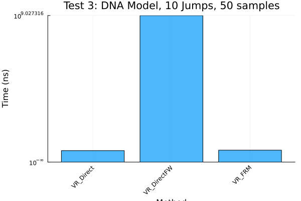

Benchmarking Variable Rate Aggregator
using DiffEqBase, Catalyst, JumpProcesses, OrdinaryDiffEq, StochasticDiffEq
using Random, LinearSolve, StableRNGs, BenchmarkTools, Plots, LinearAlgebra
fmt = :png
width_px, height_px = default(:size)
rng = StableRNG(12345)StableRNGs.LehmerRNG(state=0x00000000000000000000000000006073)Introduction
This document benchmarks the performance of variable rate jumps in JumpProcesses.jl and visualizes example solution trajectories. The benchmark compares VR_Direct, VR_DirectFW, and VR_FRM aggregators for variable rate jumps, and includes a constant rate jump model with Direct. Visualization shows state variables vs. time to verify behavior.
The test cases are:
- Scalar ODE with Variable Rate Jumps: Solved with
Tsit5andRosenbrock23(autodiff). - Complex ODE with Variable Rate Jump: Solved with
Tsit5. - DNA Gene Model: ODE with 10 variable rate jumps from the RSSA paper, solved with
Tsit5. - Negative Feedback Gene Expression: Constant rate jumps solved with
SSAStepper, variable rate jumps withTsit5, from Marchetti et al. (2017).
For visualization, we solve one trajectory per test case with 2 jumps (10 for Test 3, 8 for Test 4). For benchmarking, we vary jumps from 1 to 20 for Tests 1 and 2, use fixed jumps for Test 3 (10) and Test 4 (8), running 50 trajectories. Benchmarking saves only at the final time with save_positions=(false, false).
Benchmark and Plot Test 1
We benchmark Test 1 for 1 to 20 jumps, running 50 trajectories, and plot mean execution times as a line plot.
let
algorithms = Tuple{Any, Any, String, String}[
(VR_Direct(), Tsit5(), "VR_Direct", "Test 1 Tsit5 (VR_Direct)"),
(VR_DirectFW(), Tsit5(), "VR_DirectFW", "Test 1 Tsit5 (VR_DirectFW)"),
(VR_FRM(), Tsit5(), "VR_FRM", "Test 1 Tsit5 (VR_FRM)"),
(VR_Direct(), Rosenbrock23(), "VR_Direct", "Test 1 Rosenbrock23 (autodiff, VR_Direct)"),
(VR_DirectFW(), Rosenbrock23(), "VR_DirectFW", "Test 1 Rosenbrock23 (autodiff, VR_DirectFW)"),
(VR_FRM(), Rosenbrock23(), "VR_FRM", "Test 1 Rosenbrock23 (autodiff, VR_FRM)"),
]
function create_test1_problem(num_jumps, vr_aggregator, solver)
f = (du, u, p, t) -> (du[1] = u[1])
prob = ODEProblem(f, [0.2], (0.0, 10.0))
jumps = [VariableRateJump((u, p, t) -> u[1], (integrator) -> (integrator.u[1] = integrator.u[1] / 2.0); interp_points=20) for _ in 1:num_jumps]
jump_prob = JumpProblem(prob, Direct(), jumps...; vr_aggregator=vr_aggregator, rng=rng, save_positions=(false, false))
ensemble_prob = EnsembleProblem(jump_prob)
return ensemble_prob, jump_prob
end
num_jumps_range = append!([1], 5:5:20)
bs = Vector{Vector{BenchmarkTools.Trial}}()
errors = Dict{String, Vector{String}}()
for (algo, stepper, agg_name, label) in algorithms
@info "Benchmarking $label"
push!(bs, Vector{BenchmarkTools.Trial}())
errors[label] = String[]
_bs = bs[end]
for var in num_jumps_range
ensemble_prob, jump_prob = create_test1_problem(var, algo, stepper)
trial = try
@benchmark(
solve($jump_prob, $stepper, saveat=[$jump_prob.prob.tspan[2]]),
samples=50,
evals=1,
seconds=100
)
catch e
push!(errors[label], "Error at Num Jumps = $var: $(sprint(showerror, e))")
BenchmarkTools.Trial(BenchmarkTools.Parameters(samples=50, evals=1, seconds=100))
end
push!(_bs, trial)
mean_time = length(trial) > 0 ? "$(BenchmarkTools.prettytime(mean(trial.times)))" : "nan"
println("algo=$label, Num Jumps = $var, length = $(length(trial.times)), mean time = $mean_time")
end
end
# Log errors
for (label, err_list) in errors
if !isempty(err_list)
@warn "Errors for $label:"
for err in err_list
println(err)
end
end
end
# Plot results
fig = plot(
yscale=:log10,
xlabel="Number of Jumps",
ylabel="Time (ns)",
legend_position=:outertopright,
title="Test 1: Simulations, 50 samples"
)
for (i, (algo, stepper, agg_name, label)) in enumerate(algorithms)
_bs, _vars = [], []
for (j, b) in enumerate(bs[i])
if length(b) == 50
push!(_bs, mean(b.times))
push!(_vars, num_jumps_range[j])
end
end
if !isempty(_bs)
plot!(_vars, _bs, label=label)
else
@warn "No valid data for $label in Test 1"
end
end
display(plot(fig, layout=(1, 1), format=fmt, size=(width_px, height_px)))
endalgo=Test 1 Tsit5 (VR_Direct), Num Jumps = 1, length = 50, mean time = 462.
745 μs
algo=Test 1 Tsit5 (VR_Direct), Num Jumps = 5, length = 50, mean time = 509.
944 μs
algo=Test 1 Tsit5 (VR_Direct), Num Jumps = 10, length = 50, mean time = 537
.943 μs
algo=Test 1 Tsit5 (VR_Direct), Num Jumps = 15, length = 50, mean time = 560
.526 μs
algo=Test 1 Tsit5 (VR_Direct), Num Jumps = 20, length = 50, mean time = 584
.453 μs
algo=Test 1 Tsit5 (VR_DirectFW), Num Jumps = 1, length = 50, mean time = 78
3.847 μs
algo=Test 1 Tsit5 (VR_DirectFW), Num Jumps = 5, length = 50, mean time = 2.
257 ms
algo=Test 1 Tsit5 (VR_DirectFW), Num Jumps = 10, length = 50, mean time = 5
.137 ms
algo=Test 1 Tsit5 (VR_DirectFW), Num Jumps = 15, length = 50, mean time = 8
.390 ms
algo=Test 1 Tsit5 (VR_DirectFW), Num Jumps = 20, length = 50, mean time = 1
2.496 ms
algo=Test 1 Tsit5 (VR_FRM), Num Jumps = 1, length = 50, mean time = 78.989
μs
algo=Test 1 Tsit5 (VR_FRM), Num Jumps = 5, length = 50, mean time = 342.744
μs
algo=Test 1 Tsit5 (VR_FRM), Num Jumps = 10, length = 50, mean time = 782.56
6 μs
algo=Test 1 Tsit5 (VR_FRM), Num Jumps = 15, length = 50, mean time = 1.278
ms
algo=Test 1 Tsit5 (VR_FRM), Num Jumps = 20, length = 50, mean time = 1.915
ms
algo=Test 1 Rosenbrock23 (autodiff, VR_Direct), Num Jumps = 1, length = 50,
mean time = 990.101 μs
algo=Test 1 Rosenbrock23 (autodiff, VR_Direct), Num Jumps = 5, length = 50,
mean time = 1.006 ms
algo=Test 1 Rosenbrock23 (autodiff, VR_Direct), Num Jumps = 10, length = 50
, mean time = 1.032 ms
algo=Test 1 Rosenbrock23 (autodiff, VR_Direct), Num Jumps = 15, length = 50
, mean time = 1.101 ms
algo=Test 1 Rosenbrock23 (autodiff, VR_Direct), Num Jumps = 20, length = 50
, mean time = 1.081 ms
algo=Test 1 Rosenbrock23 (autodiff, VR_DirectFW), Num Jumps = 1, length = 5
0, mean time = 1.685 ms
algo=Test 1 Rosenbrock23 (autodiff, VR_DirectFW), Num Jumps = 5, length = 5
0, mean time = 4.804 ms
algo=Test 1 Rosenbrock23 (autodiff, VR_DirectFW), Num Jumps = 10, length =
50, mean time = 9.564 ms
algo=Test 1 Rosenbrock23 (autodiff, VR_DirectFW), Num Jumps = 15, length =
50, mean time = 16.361 ms
algo=Test 1 Rosenbrock23 (autodiff, VR_DirectFW), Num Jumps = 20, length =
50, mean time = 24.420 ms
algo=Test 1 Rosenbrock23 (autodiff, VR_FRM), Num Jumps = 1, length = 50, me
an time = 241.582 μs
algo=Test 1 Rosenbrock23 (autodiff, VR_FRM), Num Jumps = 5, length = 50, me
an time = 589.749 μs
algo=Test 1 Rosenbrock23 (autodiff, VR_FRM), Num Jumps = 10, length = 50, m
ean time = 1.083 ms
algo=Test 1 Rosenbrock23 (autodiff, VR_FRM), Num Jumps = 15, length = 50, m
ean time = 1.664 ms
algo=Test 1 Rosenbrock23 (autodiff, VR_FRM), Num Jumps = 20, length = 50, m
ean time = 2.070 msBenchmark and Plot Test 2
We benchmark Test 2 for 1 to 20 jumps, running 50 trajectories, and plot mean execution times as a line plot.
let
algorithms = Tuple{Any, Any, String, String}[
(VR_Direct(), Tsit5(), "VR_Direct", "Test 2 Tsit5 (VR_Direct)"),
(VR_DirectFW(), Tsit5(), "VR_DirectFW", "Test 2 Tsit5 (VR_DirectFW)"),
(VR_FRM(), Tsit5(), "VR_FRM", "Test 2 Tsit5 (VR_FRM)"),
]
function create_test2_problem(num_jumps, vr_aggregator, solver)
f4 = (dx, x, p, t) -> (dx[1] = x[1])
rate4 = (x, p, t) -> t
affect4! = (integrator) -> (integrator.u[1] = integrator.u[1] * 0.5)
prob = ODEProblem(f4, [1.0 + 0.0im], (0.0, 6.0))
jumps = [VariableRateJump(rate4, affect4!) for _ in 1:num_jumps]
jump_prob = JumpProblem(prob, Direct(), jumps...; vr_aggregator=vr_aggregator, rng=rng, save_positions=(false, false))
ensemble_prob = EnsembleProblem(jump_prob)
return ensemble_prob, jump_prob
end
num_jumps_range = append!([1], 5:5:20)
bs = Vector{Vector{BenchmarkTools.Trial}}()
errors = Dict{String, Vector{String}}()
for (algo, stepper, agg_name, label) in algorithms
@info "Benchmarking $label"
push!(bs, Vector{BenchmarkTools.Trial}())
errors[label] = String[]
_bs = bs[end]
for var in num_jumps_range
ensemble_prob, jump_prob = create_test2_problem(var, algo, stepper)
trial = try
@benchmark(
solve($jump_prob, $stepper, saveat=[$jump_prob.prob.tspan[2]]),
samples=50,
evals=1,
seconds=100
)
catch e
push!(errors[label], "Error at Num Jumps = $var: $(sprint(showerror, e))")
BenchmarkTools.Trial(BenchmarkTools.Parameters(samples=50, evals=1, seconds=100))
end
push!(_bs, trial)
mean_time = length(trial) > 0 ? "$(BenchmarkTools.prettytime(mean(trial.times)))" : "nan"
println("algo=$label, Num Jumps = $var, length = $(length(trial.times)), mean time = $mean_time")
end
end
# Log errors
for (label, err_list) in errors
if !isempty(err_list)
@warn "Errors for $label:"
for err in err_list
println(err)
end
end
end
# Plot results
fig = plot(
yscale=:log10,
xlabel="Number of Jumps",
ylabel="Time (ns)",
legend_position=:outertopright,
title="Test 2: Simulations, 50 samples"
)
for (i, (algo, stepper, agg_name, label)) in enumerate(algorithms)
_bs, _vars = [], []
for (j, b) in enumerate(bs[i])
if length(b) == 50
push!(_bs, mean(b.times))
push!(_vars, num_jumps_range[j])
end
end
if !isempty(_bs)
plot!(_vars, _bs, label=label)
else
@warn "No valid data for $label in Test 2"
end
end
display(plot(fig, layout=(1, 1), format=fmt, size=(width_px, height_px)))
endalgo=Test 2 Tsit5 (VR_Direct), Num Jumps = 1, length = 50, mean time = 575.
850 μs
algo=Test 2 Tsit5 (VR_Direct), Num Jumps = 5, length = 50, mean time = 2.29
5 ms
algo=Test 2 Tsit5 (VR_Direct), Num Jumps = 10, length = 50, mean time = 4.6
17 ms
algo=Test 2 Tsit5 (VR_Direct), Num Jumps = 15, length = 50, mean time = 6.8
73 ms
algo=Test 2 Tsit5 (VR_Direct), Num Jumps = 20, length = 50, mean time = 9.1
77 ms
algo=Test 2 Tsit5 (VR_DirectFW), Num Jumps = 1, length = 50, mean time = 88
5.439 μs
algo=Test 2 Tsit5 (VR_DirectFW), Num Jumps = 5, length = 50, mean time = 9.
456 ms
algo=Test 2 Tsit5 (VR_DirectFW), Num Jumps = 10, length = 50, mean time = 3
7.722 ms
algo=Test 2 Tsit5 (VR_DirectFW), Num Jumps = 15, length = 50, mean time = 9
6.066 ms
algo=Test 2 Tsit5 (VR_DirectFW), Num Jumps = 20, length = 50, mean time = 1
87.467 ms
algo=Test 2 Tsit5 (VR_FRM), Num Jumps = 1, length = 50, mean time = 84.363
μs
algo=Test 2 Tsit5 (VR_FRM), Num Jumps = 5, length = 50, mean time = 1.106 m
s
algo=Test 2 Tsit5 (VR_FRM), Num Jumps = 10, length = 50, mean time = 4.601
ms
algo=Test 2 Tsit5 (VR_FRM), Num Jumps = 15, length = 50, mean time = 10.479
ms
algo=Test 2 Tsit5 (VR_FRM), Num Jumps = 20, length = 50, mean time = 19.043
msBenchmark and Plot Test 3
We benchmark Test 3 for fixed 10 jumps, running 50 trajectories, and plot mean execution times as a bar plot.
let
algorithms = Tuple{Any, Any, String, String}[
(VR_Direct(), Tsit5(), "VR_Direct", "Test 3 Tsit5 (VR_Direct, DNA Model)"),
(VR_DirectFW(), Tsit5(), "VR_DirectFW", "Test 3 Tsit5 (VR_DirectFW, DNA Model)"),
(VR_FRM(), Tsit5(), "VR_FRM", "Test 3 Tsit5 (VR_FRM, DNA Model)"),
]
function create_test3_problem(num_jumps, vr_aggregator, solver)
r = [0.043, 0.0007, 0.0715, 0.0039, 0.0199, 0.4791, 0.00019, 0.8765, 0.083, 0.5]
k = -log(2) / 30
u0 = [10.0, 10.0, 30.0, 0.0, 0.0, 0.0] # [DNA, M, D, RNA, DNAD, DNA2D]
tspan = (0.0, 120.0)
function f_dna(du, u, p, t)
du .= 0.0
nothing
end
function rate1(u, p, t) r[1] * u[4] end
function affect1!(integrator) integrator.u[2] += 1; nothing end
jump1 = VariableRateJump(rate1, affect1!)
function rate2(u, p, t) r[2] * u[2] end
function affect2!(integrator) integrator.u[2] -= 1; nothing end
jump2 = VariableRateJump(rate2, affect2!)
function rate3(u, p, t) r[3] * u[5] end
function affect3!(integrator) integrator.u[4] += 1; nothing end
jump3 = VariableRateJump(rate3, affect3!)
function rate4(u, p, t) r[4] * u[4] end
function affect4!(integrator) integrator.u[4] -= 1; nothing end
jump4 = VariableRateJump(rate4, affect4!)
function rate5(u, p, t) r[5] * exp(k * t) * u[1] * u[3] end
function affect5!(integrator) integrator.u[1] -= 1; integrator.u[3] -= 1; integrator.u[5] += 1; nothing end
jump5 = VariableRateJump(rate5, affect5!)
function rate6(u, p, t) r[6] * u[5] end
function affect6!(integrator) integrator.u[5] -= 1; integrator.u[1] += 1; integrator.u[3] += 1; nothing end
jump6 = VariableRateJump(rate6, affect6!)
function rate7(u, p, t) r[7] * exp(k * t) * u[5] * u[3] end
function affect7!(integrator) integrator.u[5] -= 1; integrator.u[3] -= 1; integrator.u[6] += 1; nothing end
jump7 = VariableRateJump(rate7, affect7!)
function rate8(u, p, t) r[8] * u[6] end
function affect8!(integrator) integrator.u[6] -= 1; integrator.u[1] += 1; integrator.u[3] += 1; nothing end
jump8 = VariableRateJump(rate8, affect8!)
function rate9(u, p, t) r[9] * exp(k * t) * u[2] * (u[2] - 1) / 2 end
function affect9!(integrator) integrator.u[2] -= 2; integrator.u[3] += 1; nothing end
jump9 = VariableRateJump(rate9, affect9!)
function rate10(u, p, t) r[10] * u[3] end
function affect10!(integrator) integrator.u[3] -= 1; integrator.u[2] += 2; nothing end
jump10 = VariableRateJump(rate10, affect10!)
prob = ODEProblem(f_dna, u0, tspan)
jumps = (jump1, jump2, jump3, jump4, jump5, jump6, jump7, jump8, jump9, jump10)
jump_prob = JumpProblem(prob, Direct(), jumps...; vr_aggregator=vr_aggregator, rng=rng, save_positions=(false, false))
ensemble_prob = EnsembleProblem(jump_prob)
return ensemble_prob, jump_prob
end
num_jumps_range = [10]
bs = Vector{Vector{BenchmarkTools.Trial}}()
errors = Dict{String, Vector{String}}()
for (algo, stepper, agg_name, label) in algorithms
@info "Benchmarking $label"
push!(bs, Vector{BenchmarkTools.Trial}())
errors[label] = String[]
_bs = bs[end]
for var in num_jumps_range
ensemble_prob, jump_prob = create_test3_problem(var, algo, stepper)
trial = try
@benchmark(
solve($jump_prob, $stepper, saveat=[$jump_prob.prob.tspan[2]]),
samples=50,
evals=1,
seconds=100
)
catch e
push!(errors[label], "Error at Num Jumps = $var: $(sprint(showerror, e))")
BenchmarkTools.Trial(BenchmarkTools.Parameters(samples=50, evals=1, seconds=100))
end
push!(_bs, trial)
mean_time = length(trial) > 0 ? "$(BenchmarkTools.prettytime(mean(trial.times)))" : "nan"
println("algo=$label, Num Jumps = $var, length = $(length(trial.times)), mean time = $mean_time")
end
end
# Log errors
for (label, err_list) in errors
if !isempty(err_list)
@warn "Errors for $label:"
for err in err_list
println(err)
end
end
end
# Plot results
fig = plot(
yscale=:log10,
xlabel="Method",
ylabel="Time (ns)",
title="Test 3: DNA Model, 10 Jumps, 50 samples",
xticks=(1:length(algorithms), [split(a[3], " (")[1] for a in algorithms]),
xrotation=45
)
means = []
for (i, (algo, stepper, agg_name, label)) in enumerate(algorithms)
b = bs[i][1] # Single jump count (10)
if length(b) == 50
push!(means, mean(b.times))
else
push!(means, NaN)
@warn "No valid data for $label in Test 3"
end
end
bar!(1:length(algorithms), means, label="", fillalpha=0.7)
display(plot(fig, layout=(1, 1), format=fmt, size=(width_px, height_px)))
endalgo=Test 3 Tsit5 (VR_Direct, DNA Model), Num Jumps = 10, length = 50, mean
time = 83.432 ms
algo=Test 3 Tsit5 (VR_DirectFW, DNA Model), Num Jumps = 10, length = 50, me
an time = 1.065 s
algo=Test 3 Tsit5 (VR_FRM, DNA Model), Num Jumps = 10, length = 50, mean ti
me = 86.713 ms
Benchmark and Plot Test 4
We benchmark Test 4 for fixed 8 jumps, running 50 trajectories, and plot mean execution times as a bar plot.
let
algorithms = Tuple{Any, Any, String, String}[
#(Direct(), SSAStepper(), "Direct", "Test 4 SSAStepper (Direct, NegFeedback, Constant Rate)"),
(VR_Direct(), Tsit5(), "VR_Direct", "Test 4 Tsit5 (VR_Direct, NegFeedback, Variable Rate)"),
(VR_DirectFW(), Tsit5(), "VR_DirectFW", "Test 4 Tsit5 (VR_DirectFW, NegFeedback, Variable Rate)"),
(VR_FRM(), Tsit5(), "VR_FRM", "Test 4 Tsit5 (VR_FRM, NegFeedback, Variable Rate)"),
]
function create_test4_problem(num_jumps, aggregator, solver)
rn = @reaction_network begin
c1, G --> G + M
c2, M --> M + P
c3, M --> 0
c4, P --> 0
c5, 2P --> P2
c6, P2 --> 2P
c7, P2 + G --> P2G
c8, P2G --> P2 + G
end
rnpar = [:c1 => 0.09, :c2 => 0.05, :c3 => 0.001, :c4 => 0.0009, :c5 => 0.00001,
:c6 => 0.0005, :c7 => 0.005, :c8 => 0.9]
u0 = [:G => 500, :M => 0, :P => 0, :P2 => 0, :P2G => 0]
tspan = (0.0, 100.0)
if aggregator isa Direct
prob = DiscreteProblem(rn, u0, tspan, rnpar)
jump_prob = JumpProblem(rn, prob, Direct(), rng=rng, save_positions=(false, false))
ensemble_prob = EnsembleProblem(jump_prob)
else
function f_gene(du, u, p, t)
du .= 0.0
nothing
end
u0_numeric = [500.0, 0.0, 0.0, 0.0, 0.0]
p_numeric = [0.09, 0.05, 0.001, 0.0009, 0.00001, 0.0005, 0.005, 0.9]
var_rate = true
prob = ODEProblem(f_gene, u0_numeric, tspan, (p_numeric, var_rate))
function rate1(u, p, t) p[1][1] * (p[2] ? (1 + 0.1 * sin(t)) : 1.0) * u[1] end
function affect1!(integrator) integrator.u[2] += 1; nothing end
jump1 = VariableRateJump(rate1, affect1!)
function rate2(u, p, t) p[1][2] * u[2] end
function affect2!(integrator) integrator.u[3] += 1; nothing end
jump2 = VariableRateJump(rate2, affect2!)
function rate3(u, p, t) p[1][3] * u[2] end
function affect3!(integrator) integrator.u[2] -= 1; nothing end
jump3 = VariableRateJump(rate3, affect3!)
function rate4(u, p, t) p[1][4] * u[3] end
function affect4!(integrator) integrator.u[3] -= 1; nothing end
jump4 = VariableRateJump(rate4, affect4!)
function rate5(u, p, t) p[1][5] * (p[2] ? (1 + 0.1 * cos(t)) : 1.0) * u[3] * (u[3] - 1) / 2 end
function affect5!(integrator) integrator.u[3] -= 2; integrator.u[4] += 1; nothing end
jump5 = VariableRateJump(rate5, affect5!)
function rate6(u, p, t) p[1][6] * u[4] end
function affect6!(integrator) integrator.u[4] -= 1; integrator.u[3] += 2; nothing end
jump6 = VariableRateJump(rate6, affect6!)
function rate7(u, p, t) p[1][7] * u[4] * u[1] end
function affect7!(integrator) integrator.u[4] -= 1; integrator.u[1] -= 1; integrator.u[5] += 1; nothing end
jump7 = VariableRateJump(rate7, affect7!)
function rate8(u, p, t) p[1][8] * u[5] end
function affect8!(integrator) integrator.u[5] -= 1; integrator.u[4] += 1; integrator.u[1] += 1; nothing end
jump8 = VariableRateJump(rate8, affect8!)
jumps = (jump1, jump2, jump3, jump4, jump5, jump6, jump7, jump8)
jump_prob = JumpProblem(prob, Direct(), jumps...; vr_aggregator=aggregator, rng=rng, save_positions=(false, false))
ensemble_prob = EnsembleProblem(jump_prob)
end
return ensemble_prob, jump_prob
end
num_jumps_range = [8]
bs = Vector{Vector{BenchmarkTools.Trial}}()
errors = Dict{String, Vector{String}}()
for (algo, stepper, agg_name, label) in algorithms
@info "Benchmarking $label"
push!(bs, Vector{BenchmarkTools.Trial}())
errors[label] = String[]
_bs = bs[end]
for var in num_jumps_range
ensemble_prob, jump_prob = create_test4_problem(var, algo, stepper)
trial = try
@benchmark(
solve($jump_prob, $stepper, saveat=[$jump_prob.prob.tspan[2]]),
samples=50,
evals=1,
seconds=1000
)
catch e
push!(errors[label], "Error at Num Jumps = $var: $(sprint(showerror, e))")
BenchmarkTools.Trial(BenchmarkTools.Parameters(samples=10, evals=1, seconds=1000))
end
push!(_bs, trial)
mean_time = length(trial) > 0 ? "$(BenchmarkTools.prettytime(mean(trial.times)))" : "nan"
println("algo=$label, Num Jumps = $var, length = $(length(trial.times)), mean time = $mean_time")
end
end
# Log errors
for (label, err_list) in errors
if !isempty(err_list)
@warn "Errors for $label:"
for err in err_list
println(err)
end
end
end
# Plot results
fig = plot(
yscale=:log10,
xlabel="Method",
ylabel="Time (ns)",
title="Test 4: NegFeedback, 8 Jumps, 50 samples",
xticks=(1:length(algorithms), [split(a[3], " (")[1] for a in algorithms]),
xrotation=45
)
means = []
for (i, (algo, stepper, agg_name, label)) in enumerate(algorithms)
b = bs[i][1] # Single jump count (8)
if length(b) == 50
push!(means, mean(b.times))
else
push!(means, NaN)
@warn "No valid data for $label in Test 4"
end
end
bar!(1:length(algorithms), means, label="", fillalpha=0.7)
display(plot(fig, layout=(1, 1), format=fmt, size=(width_px, height_px)))
endalgo=Test 4 Tsit5 (VR_Direct, NegFeedback, Variable Rate), Num Jumps = 8, l
ength = 50, mean time = 1.413 s
algo=Test 4 Tsit5 (VR_DirectFW, NegFeedback, Variable Rate), Num Jumps = 8,
length = 50, mean time = 13.072 s
algo=Test 4 Tsit5 (VR_FRM, NegFeedback, Variable Rate), Num Jumps = 8, leng
th = 50, mean time = 1.046 s